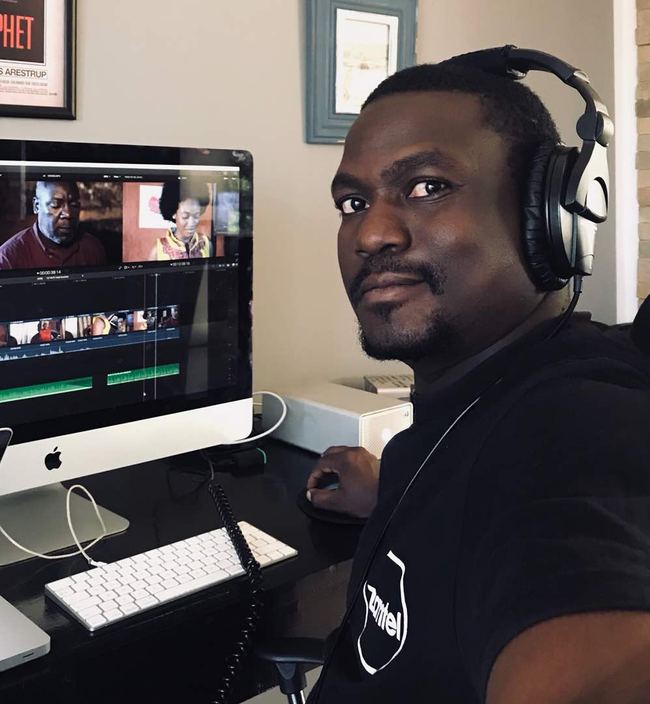

Sikeela Muyunda Kwalombota
Cinematographer | Editor | Director
Contact Me
Summary
I have been shooting and editing video professionally since 2004. I love
telling stories using the medium of film. An essential passion for good
storytelling remains at the core of my professional values. It is this
principle that allows me to deliver above-average, quality work that is
worthy of my client's investment.
Education
-
Editing with DaVinci Resolve 17
Blackmagic Design
23 June 2022
-
Certificate in Video Production
Evelyn Hone College of Applied Arts
13 June 2013
Work Experience
-
Centripetal Media Zambia | Feb 2022 - Mar 2022
Post Production Supervisor
-
Set-up Davinci Resolve for collaborative editing of over projects
Local Area Network.
-
Gave workshops in media management, editing a colour grading using
Davinci Resolve.
-
Centripetal Media Zambia | Feb 2022 - Mar 2022
Television Series Director
-
Directed 45 episodes of Makofi Season 2, which airs on DSTV Zambezi
Magic Channel 162.
-
Jam Productions Zambia | Jan 2018 - Dec 2020
Television Series Director & Editor
-
Directed 25 episodes of Zuba Season 2, which airs on DSTV Zambezi
Magic Channel 162.
-
Edited and colour graded 45 episodes of Zuba Season 1 which airs on
DSTV Zambezi Magic Channel 162.
-
Citizens Economic Empowerment Commission | Jan 2015 - Dec 2019
Documentary Producer
- Documented CEEC’s empowerment programs across Zambia.
-
Managed and procured equipment inventory for the Media Department.
-
Conceptualised and produced a business based reality TV show that
aired nation wide.
Skills
| Davinci Resolve |
⭐️⭐️⭐️⭐️⭐️ |
| Final Cut Pro |
⭐️⭐️⭐️ |
| Motion Graphics |
⭐️⭐️⭐️⭐️ |
| Creativity |
⭐️⭐️⭐️⭐️⭐️ |
| Organisation |
⭐️⭐️⭐️⭐️ |
| Quck Study |
⭐️⭐️⭐️⭐️ |